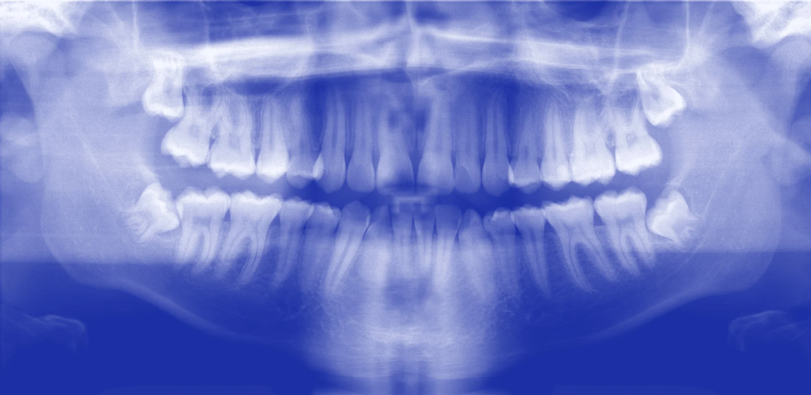
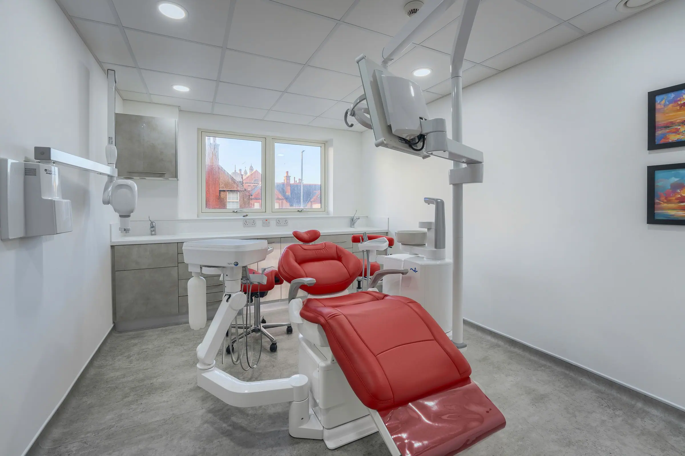

Azterketak, enpasteak, ortodontzia eta inplanteak, adinekoentzat eta haurrentzat. Hasi aurretik esaten dizugu zer daukazun, zenbat kostatzen den eta zenbat iraungo duen.
Adibideko erradiografia panoramikoa. Kontsultan zurekin ikusiko dugu pantailan.
Lehen bisita
Ordu erdi eta kosturik gabe. Zure ahoa berrikusiko dugu eta aurrekontua idatziz eramango duzu.
Gaur min ematen badizu
Deitu, eta egun horretan bertan bilatzen dugu lekua, ahal dugun guztietan. 943 000 000
Tratamenduak eta prezioak
Aukeratu zerk ekartzen zaituen eta begiratu nolakoa den lehen bisita eta zenbat balio dezakeen.

Berrikuspena eta garbiketa
- Zer da
- Hortzak eta hortzoiak begiratzen ditugu, erradiografia bat egiten dugu behar izanez gero, eta sarroa kentzen dugu.
- Lehenengo bisita
- Aho osoa aztertuko dugu, eta esango dizugu zer komeni den zaintzea hurrengo azterketa egin arte.
- Iraupena
- 45 minutu
- Prezio orientagarria
- Berrikuspena kosturik gabe · garbiketa 50 €

Horrelakoa da lehen bisita
Zer gertatzen zaizun kontatzen diguzu eta zure ahoa patxadaz begiratzen dugu. Behar izanez gero, erradiografia bat egingo dugu eta pantailan elkarrekin ikusiko dugu. Aurrekontua idatziz jasoko duzu eta etxean erabakiko duzu.
- Ordu erdi irauten du.
- Ez du kosturik.
- Aurrekontua, idatziz eta epeekin.
- Min ematen badizu, hortik hasiko gara.
Min ematen dizu orain?
Deitu. Larrialdia bada, egun horretan bertan bilatzen dugu lekua, ahal dugun guztietan.
943 000 000Adibide-zenbakia · WhatsApp
Deitu ahal bezain laster, baldin eta:
- Errotarri batek min ematen dizu eta ez da pasatzen.
- Hortz bat hautsi zaizu edo mugitu egin da.
- Enpaste bat edo koroa bat erori da.
- Ume batek kolpe bat hartu du ahoan.
Sukar handia baduzu edo hanturak ez badizu uzten irensten edo arnasten, zoaz ospitaleko larrialdietara edo deitu 112ra.
Aukeratu eguna eta ordua
Sakatu egun eta ordu libre bat. Hitzordua WhatsApp bidez edo telefonoz baieztatzen dizugu.
Lagin bat da: ordu horiek ez dira benetan gordetzen.
Hurrengo hitzordua
- Tratamendua
- Berrikuspena eta garbiketa
- Eguna
- aukeratu gabe
- Ordua
- aukeratu gabe
- Non
- Kale Nagusia 0, Tolosa
edo deitu 943 000 000

Kale Nagusian, Tolosan
Kontsulta beheko solairu batean dago, koskarik gabe. Helbidea adibide bat da.
Ordutegia
- Astelehenetik ostegunera9:00–13:30 15:00–20:00
- Ostirala9:00–15:00
- Larunbata eta igandeaItxita
- Oinez: kale nagusian, plazaren ondoan.
- Autoz: aparkaleku publikoa hiru minutura.
- Autobusez: bi minutura geltokia.